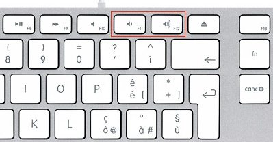
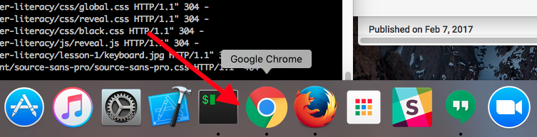
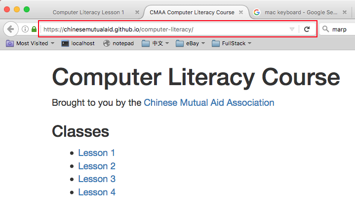
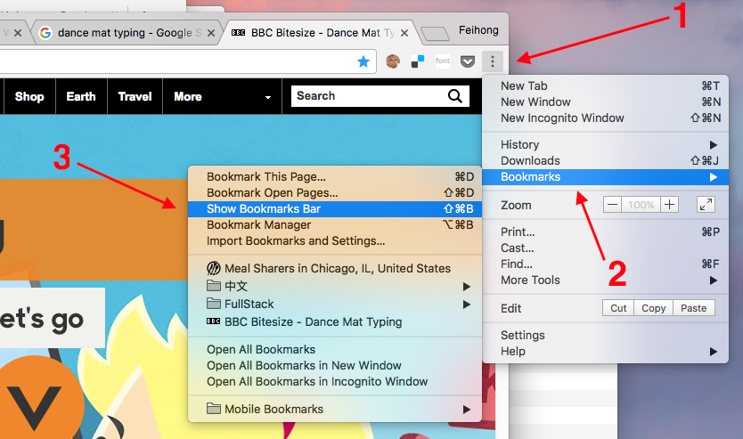
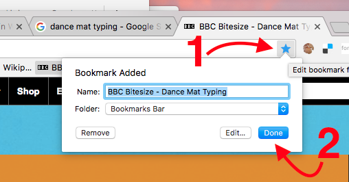
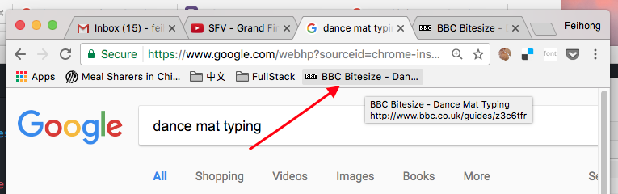

Computer Literacy Lesson 1
Chinese Mutual Aid Association
What do you want to get out of this course?
Please let us know so we can make it work for you!
You will have questions
Don't be afraid to ask any question! Your instructor and your fellow students are here to help you!
Turning on the computer
- The power button is on the back of the computer
- Look for it near the bottom
- Press it once to turn the computer on
Logging into the computer
- Make sure to log in as the "Student" user
- Ask the instructor for the password
Adjusting the volume
Press and to adjust the volume.

Open a web browser
From the dock at the bottom of the screen, click on Google Chrome.

Visit this course's website
Click on the address bar in Google Chrome, type the following URL, and then press Enter:
ChineseMutualAid.github.io/computer-literacy/

Go to Lesson 1
Click on Lesson 1 to view the web page for this lesson
Basic navigation of a web page
- Press ↑ and ↓ to scroll the page
- If you see text that is blue, you can click on it to open another web page
- Now you can follow along with the slides
Using the mouse
If you already feel comfortable using the mouse, then you can skip these exercises.
Using the keyboard
Try to complete Level 1 of Dance Mat Typing.
Using bookmarks in the browser
We are going to show you how to bookmark a website so that you can easily visit it without needing to remember its URL.
There are a few steps to this process.
Show the bookmarks bar
Click in the upper right, then Bookmarks, and finally Show Bookmarks Bar.

Create a bookmark
Click in the upper right, then Done.

Click the newly-created bookmark
The bookmark will appear in the bookmark bar. Create an empty tab and click the bookmark to prove it works.

Homework assignment #1
If you have a computer at home, create bookmarks for these two websites:
- www.bbc.co.uk/guides/z3c6tfr
- chinesemutualaid.github.io/computer-literacy/
You can even make bookmarks on your smartphone! (Although the process is a little bit different.)
The End
Yay! You completed the first lesson!